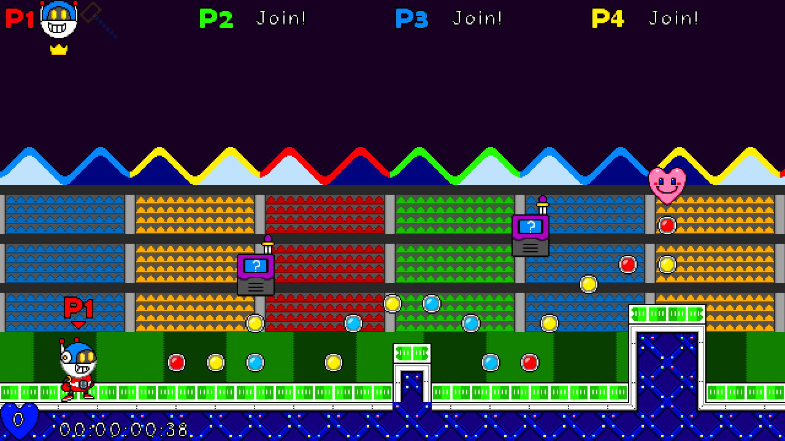
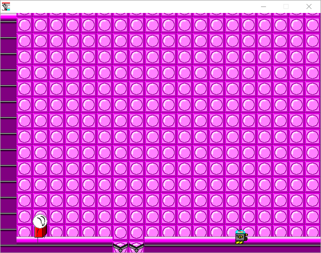
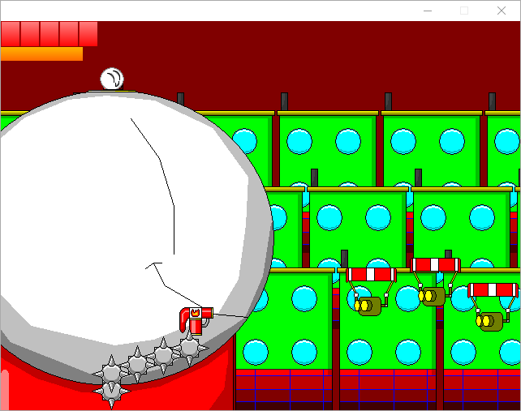
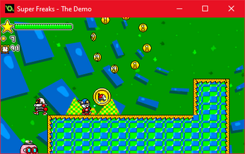
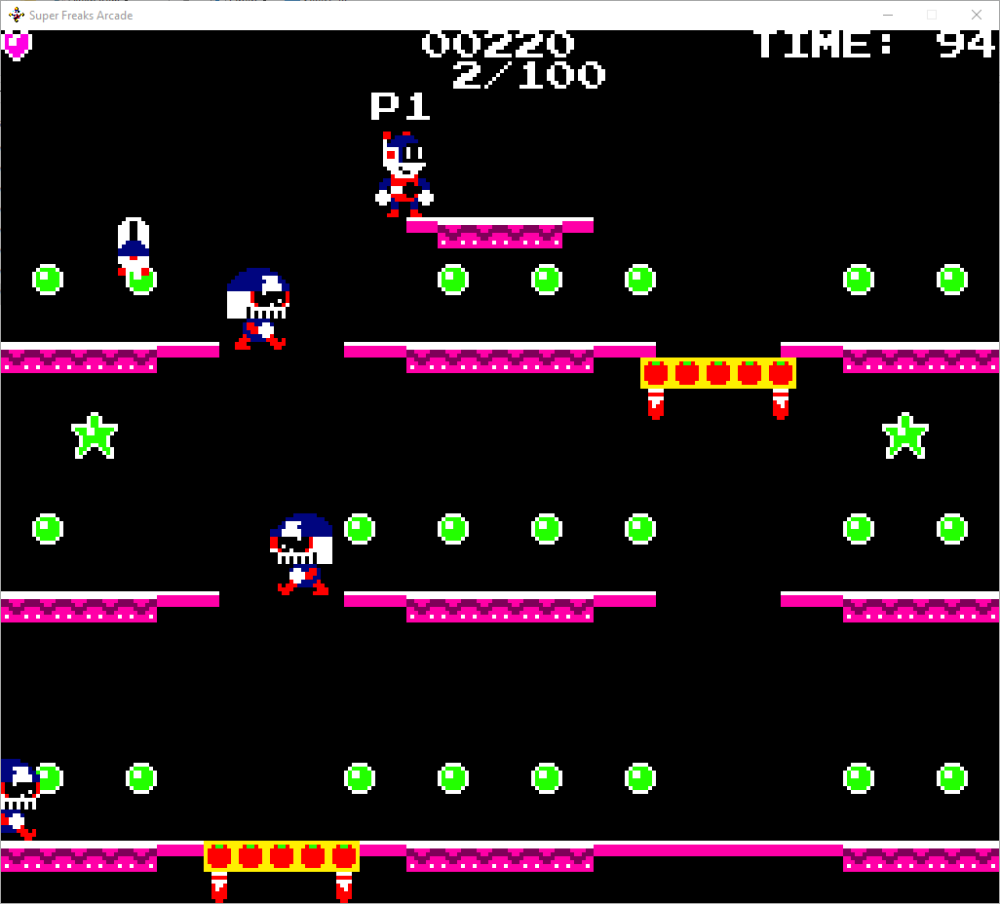

Super Freaks Stadium
GAMES
A collection of Freaky video games awaits!
SUPER FREAKS 1 ULTIMATE EDITION SUPER FREAKS ARCADE SUPER FREAKS CLASSIC COLLECTION FREAKJAM 1 SCRUFFY -CAMEOS & CROSSOVERS
SUPER FREAKS 1 ULTIMATE EDITION

A massive reimagining of the Super Freaks' first game, featuring a whole bunch of meticulously made levels, four player co-op (with a Knuckles Chaotix inspired rubber band mechanic), several bonus modes, and an original soundtrack by philRaco. Future Super Freaks games will use a lot of stuff from this game.
FIND AT SFGHQ SHOWCASE DOWNOAD ON ITCH.io
FREAKLOADER
Super Freaks 1: Ultimate Edition features a neat character loader feature, developed by _defnotreal!
Simply include a folder of custom sprites and audio of a character and play as whomever you'd like!
SUPER FREAKS CLASSIC COLLECTION
The original Super Freaks games, all available in one collection. Includes the long awaited Strato-Scruffy! A few of them include "polished" versions that have been rebalanced with bug fixes and quality-of-life features.
FIND AT SFGHQ SHOWCASE DOWNOAD ON ITCH.io

SUPER FREAKS 1: THE SEARCH FOR TIKIMAN (2006)
The one that started it all! A very stiff and short platformer, but I think it's charming at the very least.
The Polished version was ported to Game Maker Studio 1.4, and features a whole host of QOL changes: Proper saving/loading, a level select, checkpoints, a pause menu, fixes to the more frustrating bugs, etc. As of v4, also includes the Ultimate Edition soundtrack as a toggleable feature!
Super Freaks 1 Remastered (2016)
Made to celebrate the original game's 10th anniversary; also soft rebooted the series and introduced the modern characters/designs and quite a few things that would later make it into Ultimate.
Overall, an interesting version in-between 2006 and Ultimate. This version will be updated soon with all the extra stuff I added to the 2006 version (and 2, and 3), I just ran out of time.

Scruffy 2: Scruffy's Quest (2007)
Similar to 1, but with a more action packed tone, better bosses, and vehicle levels.
The original version was incredibly rough and buggy, but the Polished version fixes enough things to make it better than 1 in every way. The bosses and vehicle levels especially benefit from the fixes, removing the tedium and making them much more fun.
Scruffy Rides Again (2007)
A top down shooter game with platformer elements mixed in. Weird enough to be worth playing!
The Polished version overhauls your movement and shooting entirely, with autofire and six different strafing modes (including keyboard and mouse, which I highly recommend).

Scruffy 3: A Day in the Life (2008)
Expands on 1 and 2 with the new Speed and Battle Suits that give you new powers and can be swapped to at any time. Also slightly better graphics!
The Polished version overhauls the suits, making them more powerful, while adding a stamina meter so you can't abuse them too much.
As of v4, a right stick quick select wheel has been added for gamepad players. The end result is gameplay that is much more balanced and fun!
Strato-Scruffy (2009, Completed 2023)
Long awaited (yes really) since 2009, Strato-Scruffy has now been finished. A Fantasy Zone style shmup game with fancy graphics and bosses for its time!
The New Quincy's Adventure (2014, Original by Kingnormal in 2006)
The first of the three Quincy's Adventures by Kingnormal; sadly they were mostly lost. This version was made as a bet to see if I could complete a game in 24 hours. Adds a weapon system similar to 3's Speed/Battle Suits.

Super Freaks: The Demo (SAGE 2016)
VERY long story short, this was a testing ground for gameplay and features meant for the long awaited Super Freaks 4ever. Compared to the other games here, it has a strong score attack focus.
FREAKJAM 1
In January 2024, a private two week gamejam was held amongst me and my gamedev friends. The end result is Freakjam 1, a Super Freaks themed gamejam where the goal was to make something freaks themed (or freak adjacent, as we say a lot). We're very excited to freak out with you!!!
SUPER FREAKS ARCADE By SuperFreaksDev Super Freaks Arcade translates the gameplay of Super Freaks 1 Ultimate Edition into a single screen arcade format, taking notes from Mario Bros. and Pac-Man Championship Edition. Features one-two player co-op gameplay, and now a four player versus battle mode! |
FREAKS WORLDBy Miles' Games Freaks World merges Super Freaks and Pac-Man World into one freaky experience pac-ed with cool features from both. Features a very accurate PSX art style, and the Speed Suit and Battle Suit returning from Scruffy 3: A Day in the Life! This game will be updated again in the near future. |
Razer the Hedgehog Next GenBy EngineerKappa Razer Next Gen is essentially EngineerKappa giving her first attempts at game development (a Sonic 06 fan remake) the Super Freaks 1 Ultimate Edition treatment. It was also a convenient way to learn Godot! |
Super ScruffyBy Riegelsoft Super Scruffy combines Strato-Scruffy and Super Freaks 2016 into a wild and surprisingly lengthy game. Scruffy can turn into a car and a plane on command. There are alternating "find the exit" and "find the monkey council" levels. Scruffy will need to save the Powerful Monkey Council from Sticky once again! |
Desert FreakBy Sharb It's freaks. It's desert bus. You know the drill! Drive down the Barrel Canyon Interstate Highway while preventing John "Scruffy" Super Freaks from veering offroad. Perhaps you'll even learn something! Now features netplay! |
So Far, So FreaksBy Halatnikov So Far So Freaks is a silly edit of SSNTails' engine test for Sonic Robo Blast X. Scruffy has to t-pose around and grab all of his marbles. |
Scruffy Freaking DiesBy Halatnikov Scruffy Freaking Dies is...well, it's cinema. David Cage wishes he could show the human condition like this. |
Scruffy's Quest to Buy MilkBy galaxycamerata A parody RPG Maker horror game. Scruffy winds up in a haunted house on his way to the store to get milk. Unfortunately for the owner of the house, Scruffy is completely and utterly unphased by anything in it. |
My Pet ScruffyBy _defnotreal A pet sim game where Scruffy is hungry and also too lazy to do literally anything at all. You'll need to buy food from Uncle Swordsman and carefully ration it out to keep him full. I do not want to know what happens if you don't! |
Freaks EternalBy Null3D Games The most epic FPS of all time is here. Use Scruffy's various weaponry and wall running skills to fend off Boney M's before they make your heart stop in the survival game of a lifetime. |